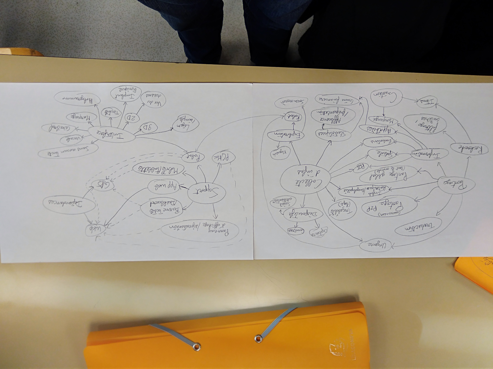

Projet IHM
Réalisation de questionnaires et interviews :
- google form : https://docs.google.com/forms/d/e/1FAIpQLSfDUnpIm5im4AUXSGb_l6DYa1gcPejyMTY5wNuQANfOaUWwBw/viewform
- interviews (enregistrements vocaux / notes papiers)
Résultats :
- une majorité d'utilisateurs qui veulent pouvoir calculer des itinéraires
- un usage majoritairement "mobile" : un peu partout, tout le temps. Un support majoritaire : le smartphone.
- quelques idées innovantes :
- pouvoir choisir une époque et voir la carte évoluer avec le temps (intérêt historique / culturel)
- pouvoir cartographier des intérieurs et le placement d'objets (bâtiments, pièces, archives, meubles, bibliothèques ...)
- des systèmes fonctionnels même sans réseau ou sans gps (pour les appels d'urgence par exemple)
Brainstorming :
Post-its pour générer un maximum d'idées, donc des "crazy ideas" :

MindMap pour relier entre eux les concepts mis en avant par les post-its :

Les idées retenues :
(Ajouter les concepts retenus)
Prototypes vidéo :
(Ajouter les liens des vidéos)